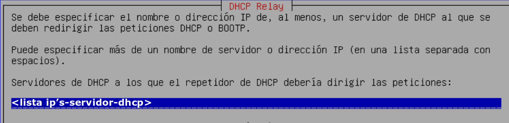
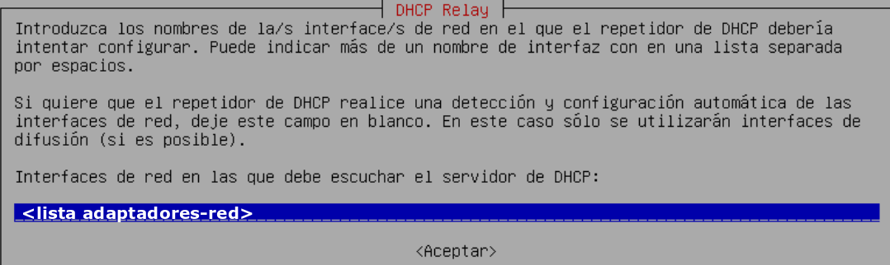
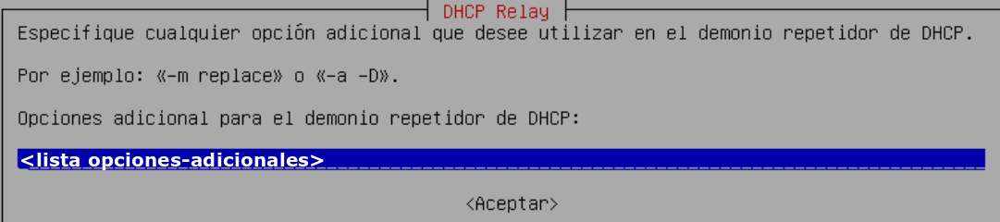

DHCP SERVER
LINUX
ÍNDICE
INSTALACIÓN Y CONFIGURACIÓN DE UN SERVIDOR DHCP
En los sistemas Linux básicamente tenemos dos opciones para instalar un servidor DHCP:
- Servidor DHCP proporcionado por el paquete
isc-dhcp-server. - Servidor DHCP proporcionado por el paquete
dnsmasq.
En este documento nos centraremos en el servidor DHCP del ISC (Internet Systems Consortium).
EL SERVIDOR isc-dhcp-server
El servidor DHCP del ISC permite hacer configuraciones muy complejas del servicio DHCP. Nosotros nos centraremos en las configuraciones elementales.
Instalación
Lo primero que debemos hacer es instalar el paquete isc-dhcp-server. En distribuciones basadas en Debian, podemos hacerlo con cualquiera de los siguientes comandos:
apt install isc-dhcp-server
apt-get install isc-dhcp-server
Interfaces del servidor DHCP
En el archivo /etc/default/isc-dhcp-server se especifica por qué interfaces de red el servidor DHCP acepta peticiones (en caso de tener más de una). En versiones más modernas, el servidor también puede proporcionar direcciones IPv6.
La siguiente tabla muestra las directivas que se pueden configurar en dicho archivo:
| Directiva | Descripción |
|---|---|
INTERFACESv4="<lista-adaptadores-red>" |
Especificamos los adaptadores de red por los cuales queremos que el servidor DHCP sirva direcciones IPv4. |
INTERFACESv6="<lista-adaptadores-red>" |
Especificamos los adaptadores de red por los cuales queremos que el servidor DHCP sirva direcciones IPv6. |
DHCPDv4_CONF="<archivo-configuracion-ipv4>" |
Especificamos el archivo de configuración del servidor DHCP para servir direcciones IPv4. |
DHCPDv6_CONF="<archivo-configuracion-ipv6>" |
Especificamos el archivo de configuración del servidor DHCP para servir direcciones IPv6. |
DHCPDv4_PID="<archivo-pid-ipv4>" |
Identificador del proceso servidor DHCP de direcciones IPv4. |
DHCPDv6_PID="<archivo-pid-ipv6>" |
Identificador del proceso servidor DHCP de direcciones IPv6. |
Por defecto, las directivas DHCPDv4_CONF y DHCPDv6_CONF aparecen comentadas, lo cual significa que hay un único archivo de configuración llamado /etc/dhcp/dhcpd.conf.
Por defecto, las directivas DHCPDv4_PID y DHCPDv6_PID también aparecen comentadas, lo cual indica que hay un único archivo PID que almacena el identificador del proceso, tanto para IPv4 como para IPv6. Este archivo es: /var/run/dhcpd.pid.
Por último, las directivas INTERFACESv4 y INTERFACESv6 aparecen con listas vacías, lo cual quiere decir que el servidor DHCP servirá direcciones IPv4 y IPv6 por todos los adaptadores de red que tenga. Si queremos que solo sirva direcciones IPv4, necesariamente debemos poner la lista de adaptadores de red en la directiva INTERFACESv4 y dejar vacía la lista en INTERFACESv6.
Adaptadores de red servidor DHCP
Un servidor DHCP tiene dos tarjetas de red llamadas enp0s3 y enp0s8. Vamos a configurar el servidor DHCP de manera que solo sirva direcciones IPv4 por la interfaz enp0s8.
Solución
Editamos el archivo de configuración de opciones por defecto /etc/default/isc-dhcp-server y configuramos las variables tal como se muestra a continuación:
INTERFACESv4="enp0s8"
INTERFACESv6=""
Configuración del servidor DHCP
La configuración del servidor se realiza en el archivo /etc/dhcp/dhcpd.conf (si no hemos cambiado la configuración por defecto). Es un archivo de texto con una serie de entradas, normalmente una por línea. Si una entrada necesita varios parámetros, estos se pueden agrupar mediante llaves {} y cada parámetro va en una línea. Las líneas que empiezan por # son comentarios y son ignoradas.
Las entradas pueden ser:
- Declaraciones: Se usan para describir redes, máquinas o grupos de máquinas junto con un rango de direcciones IP que se conceden para cada declaración.
- Parámetros: Describen el comportamiento del servidor DHCP. Pueden ser globales o locales a un conjunto de declaraciones.
A continuación se muestra el esquema general del archivo de configuración:
Parámetros globales;
Declaración_1 {
[Parámetros relativos a Declaración_1]
[Subdeclaración anidada]
}
Declaración_2 {
[Parámetros relativos a Declaración_2]
[Subdeclaración anidada]
}
Elementos clave de configuración
En el archivo de configuración se definen las redes en las que actúa el servidor DHCP y los rangos de direcciones que puede asignar. Las opciones más importantes son:
- subnet: Aplica un conjunto de parámetros y/o declaraciones a un conjunto de direcciones que coincidan con los datos de la declaración.
- range: Establece un rango de direcciones IP válidas para asignar a los clientes. Los rangos se definen dentro de la red indicada en la declaración. Puede haber más de una declaración de rango, permitiendo definir rangos discontinuos.
- host: Permite definir reservas, de forma que se asigne siempre la misma IP a un equipo identificado por su dirección MAC.
Estructura general de las declaraciones
subnet <ip-red> netmask <máscara-red> {
range <ip-inicial> <ip-final>;
[range <ip-inicial> <ip-final>;]
[parámetros]
[subdeclaraciones anidades]
}
host <nombre-equipo> {
hardware ethernet <mac-equipo>;
[parámetros]
fixed-address <ip-fija>;
}
Los parámetros que comienzan con option describen datos que el servidor proporciona al cliente como parte de la configuración IP. Los que no comienzan con option describen características del servidor DHCP.
Los parámetros definidos de manera global se aplican a todas las declaraciones definidas en el archivo. Por ejemplo, se puede definir un servidor DNS globalmente, de modo que si en una declaración subnet no se especifica ninguna opción DNS, se asignará a los clientes el DNS definido globalmente. Un parámetro dentro de una declaración, como por ejemplo subnet, sobrescribe el valor del mismo parámetro si este está definido de forma global.
En cuanto a las declaraciones host, hay que tener en cuenta que si reservamos una IP que está dentro de un rango definido por una cláusula range en una declaración subnet, esa IP puede ser asignada a cualquier cliente. Por tanto, en estos casos lo recomendable es utilizar direcciones IP que pertenezcan a una de las redes definidas en una declaración subnet, pero que no estén incluidas dentro del rango de direcciones especificado en la cláusula range.
Otro aspecto importante es que el tiempo de concesión asignado a la reserva no es ilimitado, sino que corresponde al tiempo definido en la declaración subnet, de forma global o por defecto. Este inconveniente se puede solucionar estableciendo el tiempo mínimo de concesión como infinito mediante una opción dentro de la declaración host.
Parámetros usuales
Los parámetros de configuración general del servidor DHCP tinen la siguiente sintaxis:
parámetro [<valor>]
La siguiente tabla recoge los parámetros de configuración del servidor más comunes.
| Parámetro | Descripción |
|---|---|
authoritative |
Marca el servidor como autoritativo. Esto evita que otros servidores DHCP puedan funcionar en la misma red. |
default-lease-time <segundos> |
Tiempo de concesión por defecto que se asignará a un cliente si no se especifica otro valor. |
max-lease-time <segundos> |
Tiempo máximo de concesión que podrá asignar el servidor. |
min-lease-time <segundos> |
Tiempo mínimo de concesión que podrá asignar el servidor. Se puede usar el valor infinite. |
db-time-format <default | local> |
Especifica cuál es el formato de las fechas relativas a las concesiones de direcciones que aparecen en el archivo de concesiones (/var/lib/dhcp/dhcpd.leases). Hay dos formas de configurar el formato de las fechas: por defecto (con formato <día-semana> <año>/<mes>/<día> <hora>:<minutos>:<segundos>) y local (con formato epoch <unix-time>; #<nombre-día> <nombre-mes> <día> <hora>:<minutos>:<segundos> <año>). |
ddns-update-style <none|ad-hoc|interim> |
El parámetro ddns-update-style indica el método que utiliza el servidor DHCP para actualizar de forma dinámica los registros del servidor DNS con las direcciones IP asignadas mediante DHCP. En nuestro caso, como no vamos a trabajar con DNS, se recomienda establecer el valor en none. Si se activa esta opción, el servidor DHCP actualizará automáticamente los registros DNS con las direcciones asignadas a los clientes. Además, mediante la opción option domain-name, se puede especificar el dominio en el que se realizarán estas actualizaciones DNS. |
La siguiente tabla recoge los parámetros opcionales más comunes ofrecidos a los clientes por el servidor DHCP.
| Parámetro | Descripción |
|---|---|
option routers <ip> |
Indica la puerta de enlace predeterminada que se asignará a los clientes. |
option domain-name-servers <lista> |
Lista de servidores DNS que se asignarán a los clientes. |
option domain-name <nombre-dominio> |
Nombre del dominio que se asignará a los clientes. |
Ejemplos
Configuración básica servidor DHCP
Vamos a configurar un servidor DHCP en un equipo con un único adaptador y sistema operativo Debian.
Para llevar a cabo la configuración tendremos en cuenta las siguientes características:
- IP servidor:
192.168.1.2 - Red:
192.168.1.0/24 - Rango de IPs:
192.168.1.128 – 192.168.1.254 - Router:
192.168.1.1 - DNS:
192.168.1.3,8.8.8.8 - Dominio DNS:
smr-ser.ies-balmis.dom - Tiempo de concesión por defecto: 12 horas (
43200segundos) - Tiempo de concesión máximo: 24 horas (
86400segundos) - Tiempo de concesión mínimo: 6 horas (
21600segundos)
Solución
Editamos el archivo de configuración por defecto /etc/dhcp/dhcpd.conf y añadimos (o modificamos) la siguiente información:
authoritative;
max-lease-time 86400;
min-lease-time 21600;
subnet 192.168.1.0 netmask 255.255.255.0 {
range 192.168.1.128 192.168.1.254;
option routers 192.168.1.1;
option domain-name-servers 192.168.1.3, 8.8.8.8;
option domain-name "smr-ser.ies-balmis.dom";
default-lease-time 43200;
}
Añadir nuevo ámbito al servidor DHCP
Vamos a añadir una tarjeta de red al servidor DHCP del ejemplo anterior para que también pueda servir IP's a los equipos de la red 192.168.2.0/24. Para ello hay que tener en cuenta las siguientes características:
- IP's servidor:
192.168.1.2y192.168.2.2. - Nueva red:
192.168.2.0/24 - Rangos de IPs:
192.168.2.64–192.168.2.127y192.168.2.192–192.168.2.254 - Duración de la concesión: 10 horas (
36000segundos) - Router:
192.168.2.1 - DNS:
8.8.4.4
Además queremos que el servidor sólo sirva direcciones IPv4.
Solución
Editamos el archivo de configuración por defecto /etc/dhcp/dhcpd.conf y añadimos la siguiente información:
subnet 192.168.2.0 netmask 255.255.255.0 {
range 192.168.2.64 192.168.2.127;
range 192.168.2.192 192.168.2.254;
option routers 192.168.2.1;
option domain-name-servers 8.8.4.4;
default-lease-time 36000;
}
A continuación modificamos el fichero /etc/default/isc-dhcp-server para que sirva ip's a por las dos tarjetas de red y sólo sirva direcciones IPv4.
INTERFACESv4="enp0s3 enp0s8"
INTERFACESv6=""
Reserva de IP
En el siguiente ejemplo vamos a hacer que el servidor DHCP asigne siempre la misma IP a una impresora de red.
Datos:
- MAC impresora:
08:00:27:13:31:75 - IP asignada:
192.168.2.128
Añadimos al archivo /etc/dhcp/dhcpd.conf la siguiente definición:
host Impresora {
hardware ethernet 08:00:27:13:31:75;
fixed-address 192.168.2.128;
min-lease-time infinite;
}
Gestión de concesiones de direcciones IP
El servidor DHCP utiliza un archivo de texto ASCII como base de datos para controlar qué direcciones IP ha asignado a los diferentes equipos de la red. El nombre del archivo de concesiones se puede especificar usando el parámetro lease-file-name en el archivo de configuración de DHCP. Si no se especifica, el valor por defecto es:
/var/lib/dhcp/dhcpd.leases
La estructura general del archivo es la siguiente:
lease <ip-cliente1> {
starts <fecha-hora>;
ends <fecha-hora>;
binding state active;
hardware ethernet <mac-cliente1>;
client-hostname "<nombre>";
}
lease <ip-cliente2> {
starts <fecha-hora>;
ends <fecha-hora>;
binding state active;
hardware ethernet <mac-cliente2>;
client-hostname "<nombre>";
}
...
Este archivo almacena todas las concesiones de direcciones IP que ha realizado el servidor DHCP a los distintos equipos de la red. Cada concesión, activa o inactiva, se registra como un bloque que comienza con la palabra reservada lease seguida de la dirección IP asignada al cliente. Dentro de cada bloque se incluyen varias sentencias con información relevante sobre la concesión, de las cuales destacamos las que aparecen en la siguiente tabla:
| Sentencia | Descripción |
|---|---|
starts <fecha-hora> |
Indica la fecha y hora en la que se inicia la concesión de la dirección IP al cliente. Este valor se registra automáticamente por el servidor DHCP y su formato depende del parámetro db-time-format configurado en el servidor. |
ends <fecha-hora> |
Fecha y hora en la que finaliza la concesión. |
binding state <estado> |
Estado de la concesión. Puede ser active (activa), free (libre) o abandoned (abandonada). |
hardware ethernet <mac-cliente> |
Dirección MAC del cliente al que se le ha asignado la dirección IP. |
client-hostname "<nombre>" |
Nombre del cliente al que se le ha asignado la dirección IP. |
next-binding state <estado> |
Estado de la concesión en el siguiente ciclo de concesión. Puede ser active, free o abandoned. |
El archivo de concesiones se reescribe periódicamente para evitar que crezca demasiado. Para ello, se crea un archivo temporal con el contenido actualizado de las concesiones. El archivo anterior se renombra añadiendo el sufijo ~ (por ejemplo, /var/lib/dhcp/dhcpd.leases~) y, a continuación, el archivo temporal pasa a tener el nombre del archivo de concesiones configurado.
Puedes encontrar más información en las páginas del manual del sistema operativo ejecutando el comando man dhcpd.leases en la terminal.
Este archivo puede consultarse con un editor de texto o utilizando la utilidad dhcp-lease-list, que muestra la información de forma más legible.
El comando dhcp-lease-list permite consultar de forma sencilla y legible las concesiones de direcciones IP gestionadas por el servidor DHCP. Muestra información relevante como la dirección IP asignada, la dirección MAC del cliente, el estado de la concesión y el tiempo restante, entre otros datos. Es especialmente útil para obtener un resumen rápido de las concesiones activas o históricas sin necesidad de revisar manualmente el archivo de concesiones.
La sintaxis general del comando es:
dhcp-lease-list [opciones]
Entre las opciones más comunes se encuentran:
-
--all
Muestra todas las concesiones, tanto activas como inactivas. -
--parsable
Muestra la salida en un formato más legible y fácil de procesar. -
--help
Muestra la ayuda del comando con todas las opciones disponibles.
Consulta concesiones DHCP activas
root@DHCP:~# dhcp-lease-list
Reading leases from /var/lib/dhcp/dhcpleases
MAC IP hostname valid until manufacturer
=========================================================================================
08:00:27:0d:f2:57 192.168.1.130 PC3-X1 2023-11-02 19:43:27 -NA-
08:00:27:0d:e7:32 192.168.2.64 PC1-X2 2023-11-02 22:02:13 -NA-
En el siguiente se observa, por un lado, que el host PC1-X2 tiene una concesión activa de la dirección IP 192.168.2.64 hasta el 2 de noviembre de 2023 a las 22:02:13 y por otro lado, que el host PC3-X1 tiene una concesión activa de la dirección IP 192.168.2.130 hasta el 2 de noviembre de 2023 a las 19:43:27.
Clientes DHCP
Para que un equipo pueda obtener una dirección IP de forma dinámica en una red, es necesario que tenga instalado un cliente DHCP. Este cliente se encarga de solicitar la configuración de red al servidor DHCP. El cliente DHCP más común en sistemas Linux es dhclient, incluido en el paquete isc-dhcp-client.
Instalación del cliente DHCP
El cliente DHCP suele venir preinstalado en la mayoría de las distribuciones Linux. Sin embargo, si no está instalado, se puede instalar fácilmente utilizando el gestor de paquetes correspondiente. Para instalar el cliente DHCP en sistemas basados en Debian/Ubuntu:
apt install isc-dhcp-client
Uso básico
El cliente DHCP suele ejecutarse automáticamente al iniciar el sistema o al conectar un adaptador de red. Sin embargo, también puede ejecutarse manualmente para renovar o liberar una concesión de dirección IP:
dhclient [interfaz] # Solicita o renueva una dirección IP para la interfaz indicada
dhclient -r [interfaz] # Libera la concesión de la dirección IP de la interfaz indicada
Configuración del cliente DHCP
La configuración principal del cliente DHCP se realiza en el archivo /etc/dhcp/dhclient.conf. En este archivo se pueden personalizar aspectos como las opciones que solicita el cliente al servidor o el comportamiento ante las concesiones de direcciones IP. Algunos parámetros habituales en dhclient.conf son:
request <opciones>: Especifica una lista de opciones que el cliente solicita al servidor. El servidor puede proporcionarlas o no.require <opciones>: Indica opciones que el cliente considera obligatorias. Si el servidor no las proporciona, el cliente rechaza la IP ofrecida.send <opción> <valor>: Permite enviar una opción concreta con un valor determinado al servidor DHCP.
Por defecto, dhclient funciona con una configuración estándar, pero puede adaptarse a las necesidades del usuario modificando este archivo.
Almacenamiento de concesiones
El cliente almacena la información de las concesiones recibidas del servidor DHCP en archivos similares a los del propio servidor. Los archivos habituales son:
/var/lib/dhcp/dhclient.leases(archivo general)/var/lib/dhcp/dhclient.<adaptador>.leases(uno por cada interfaz de red)
Cada archivo contiene una serie de bloques lease, uno por cada concesión obtenida o renovada, ordenados cronológicamente (la última concesión aparece al final). En cada bloque se incluye información como:
interface "<adaptador>": Nombre de la interfaz de red.renew <tiempo>: Momento en que debe renovarse la concesión.rebind <tiempo>: Momento en que debe intentar reasociarse.expire <tiempo>: Momento en que expira la concesión.- Opciones recibidas del servidor, indicadas con la palabra
option.
La configuración avanzada del cliente DHCP puede ser compleja y está fuera del alcance de este curso, pero con estos conceptos básicos es posible gestionar la obtención dinámica de direcciones IP en sistemas Linux.
Agentes de retransmisión DHCP (DHCP Relay)
Un agente de retransmisión DHCP permite transmitir peticiones DHCP entre diferentes subredes, facilitando que los clientes puedan obtener una dirección IP aunque el servidor DHCP no esté en su misma red.
En sistemas Linux, la instalación y configuración de un agente de retransmisión es sencilla gracias al paquete proporcionado por ISC (Internet Software Consortium): isc-dhcp-relay.
Instalación del agente de retransmisión DHCP en Linux
Para instalar el agente de retransmisión DHCP en sistemas basados en Debian/Ubuntu, puedes utilizar el siguiente comando:
apt install isc-dhcp-relay
Configuración del DHCP Relay
Una vez instalado, el agente de retransmisión DHCP se configura principalmente editando el archivo /etc/default/isc-dhcp-relay. Durante la instalación se solicitarán los siguientes datos:
- Dirección IP del servidor DHCP: Una o varias direcciones IP de los servidores a los que el relay enviará las peticiones.
- Interfaces de red: Interfaces por las que el agente gestionará las peticiones DHCP.
- Otras opciones: Opcionalmente, se pueden añadir parámetros adicionales.
Las principales directivas de configuración en este archivo son:
| Directiva | Descripción |
|---|---|
SERVERS |
Direcciones IP de los servidores DHCP a los que se reenviarán las peticiones. |
INTERFACES |
Nombres de las interfaces de red implicadas en la retransmisión. |
OPTIONS |
Opciones adicionales reconocidas por el servicio dhcprelay (opcional). |
Configuración del agente de retransmisión DHCP
Supongamos que partimos del servidor DHCP configurado en el segundo ejemplo y queremos que también asigne direcciones IP a los equipos de la segunda red (192.168.2.0/24). Para ello, es necesario instalar un agente DHCP Relay en la segunda red. Este agente se encargará de recibir las peticiones DHCP de los clientes de esa red y reenviarlas al servidor DHCP principal. Supongamos que el equipo donde instalamos el DHCP Relay tiene la IP 192.168.2.4.
Solución
Durante la instalación del servicio, se nos solicitarán los siguientes datos:
-
En la primera pantalla: Introducimos la IP del servidor DHCP.
 -
En la segunda pantalla: Indicamos el nombre de la interfaz de red del equipo.
 -
En la tercera pantalla: Dejamos el campo vacío.

Si hemos introducido correctamente todos los datos, el archivo de configuración del DHCP Relay debe contener los siguientes valores para sus parámetros:
# What servers should the DHCP relay forward requests to?
SERVERS="192.168.1.2"
# On what interfaces should the DHCP relay (dhrelay) serve DHCP requests?
# Hemos supuesto que el nombre del adaptador de red es enp0s3
INTERFACES="enp0s3"
# Additional options that are passed to the DHCP relay daemon?
OPTIONS=""